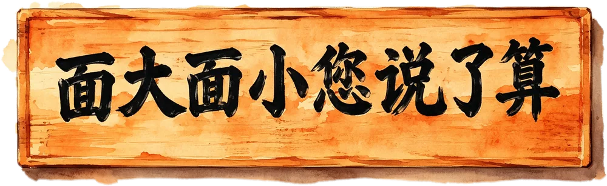
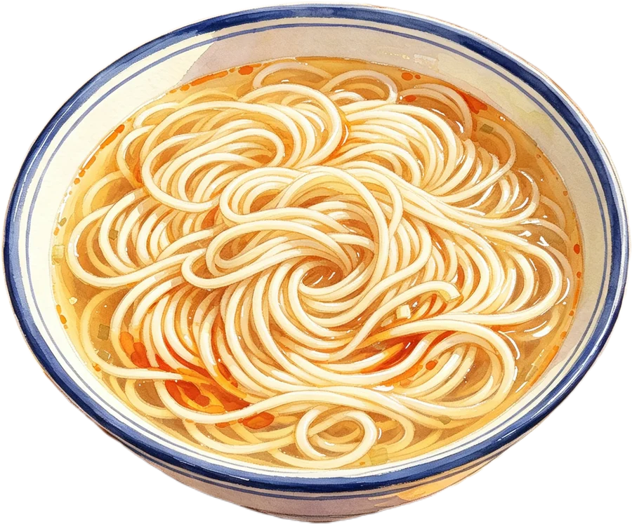
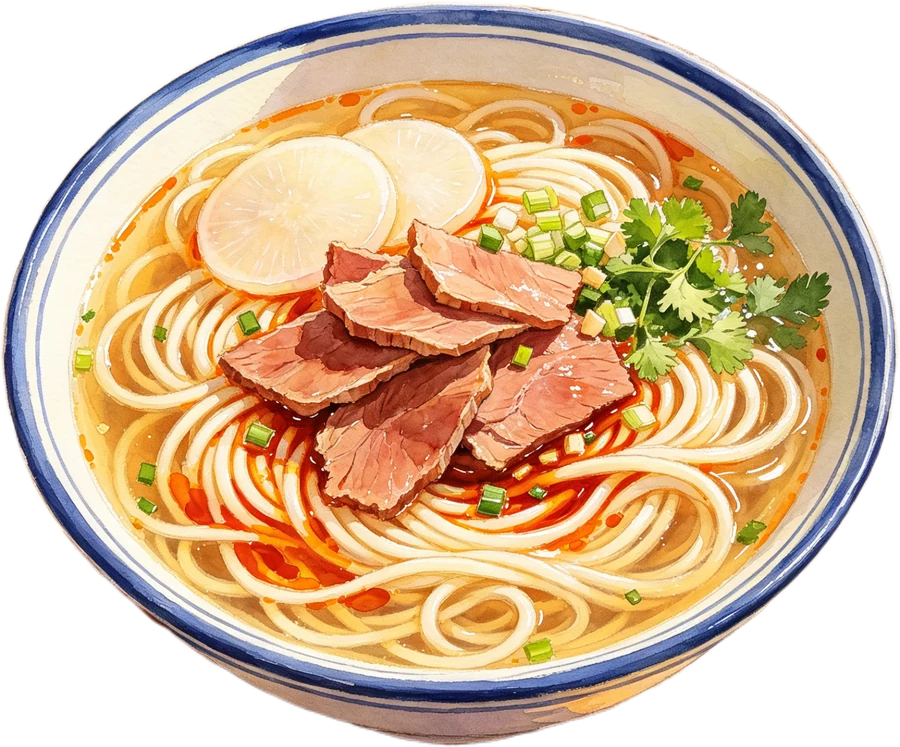

一 清 · 二 白 · 三 红 · 四 绿 · 五 黄
来兰州
吃一碗现拉的面
汤要清到透亮，面要黄到筋道
这一碗，从嘉庆年间一直热到现在
黄河
这一碗，从嘉庆年间一直热到现在
轻触「再拉一碗」· 回到开篇
壹 · 十二面型

已 翻 0 / 6一清·二白·三红·四绿·五黄
轻触木牌·翻看背面
贰 · 粗细宽窄
已 翻 0 / 6
一根面·十二种脾气·任你挑
轻触木牌·翻看背面
把它端起来
拖 拽 食 材 入 碗


你的专属面做好了
贰 · 百 年 面 史
一根面的百年
五 个 阶 段 · 二 十 个 节 点
上下滑动 看完整根面